Moire Capability 20260817 v2
Additive M1-M3 tuning and extension of the izzi moire vocabulary: eighteen deterministic plates covering tuned line, concentric, radial, grid, and hybrid fields.
Izzi generation commit: 085941fd605aedbaae6277a0eb4ff03ac20508a4 · 18 passes
-
M1 fine linear grid
Fine near-vertical line families with a close beat.
-
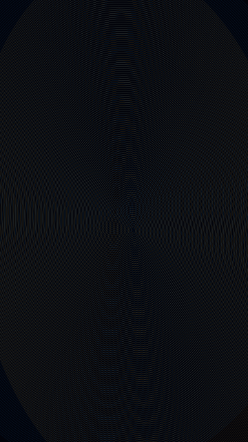
M1 stepped elliptic field
Dense ellipses with per-ring aspect stepping.
-
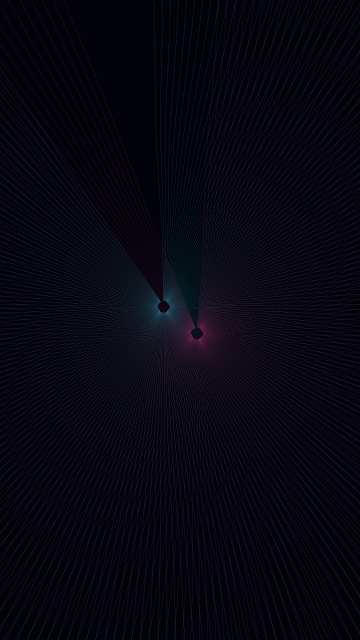
M1 radial aperture
Dense rays with an open angular aperture.
-
M1 interference texture
Tuned line interference with restrained waves.
-
M1 destabilized texture
Seed-driven destabilized line texture.
-
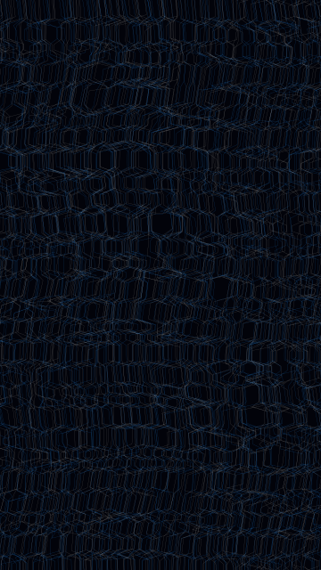
M1 glitch texture
Bounded experimental glitch displacement.
-
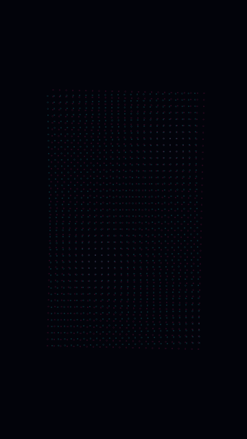
M2 dot grid
Closed dot motifs on a rotatable cell lattice.
-
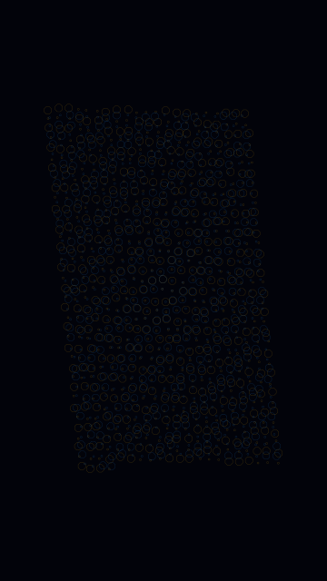
M2 negative-positive
Inversion and parity selected compact and expanded motifs.
-
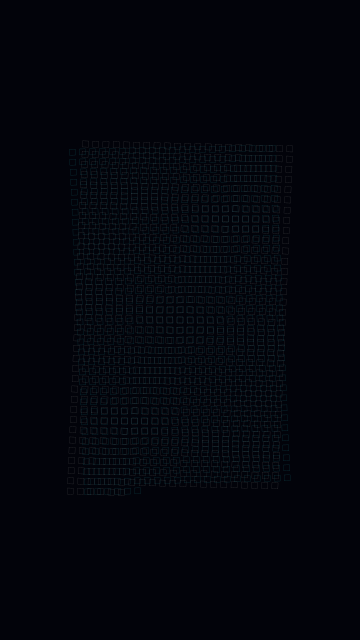
M2 square grid
Closed square motifs on a skewed cell lattice.
-
M2 slanted line grid
Parallel lines with a common shear angle.
-
M2 rotated line grid
Lines with a per-line angular increment.
-
M2 variable grid
Parallel lines with a center-to-edge density gradient.
-
M3 line-dot hybrid
Two-family line and dot lattice beat.
-
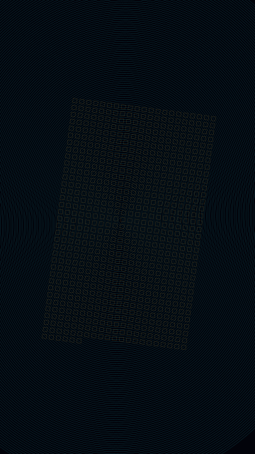
M3 orbit-square hybrid
Concentric and square lattice superposition.
-
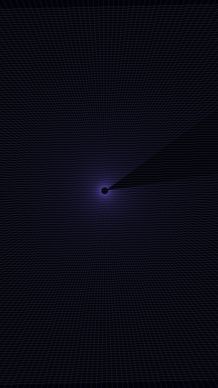
M3 radial-slant hybrid
Radial rays over a slanted line grid.
-
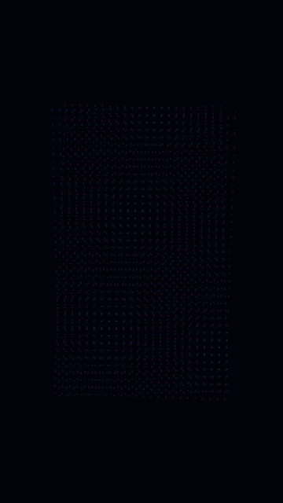
M3 grid interference
Motif-grid interference at capped amounts.
-
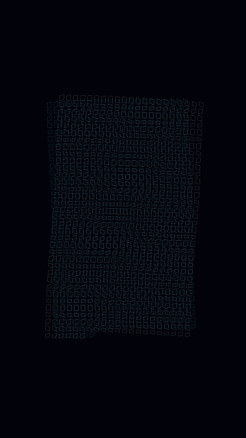
M3 grid destabilization
Motif-grid destabilization within bounded amounts.
-
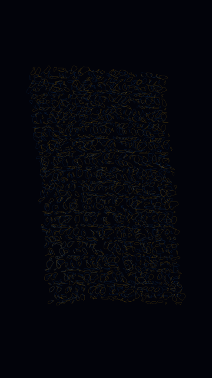
M3 polarity glitch
Negative-positive polarity under experimental glitch.